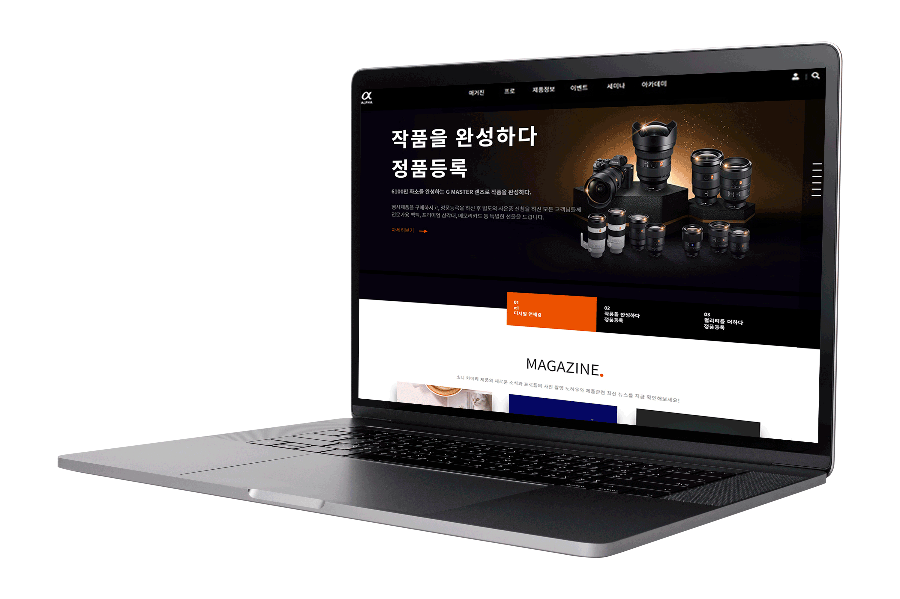
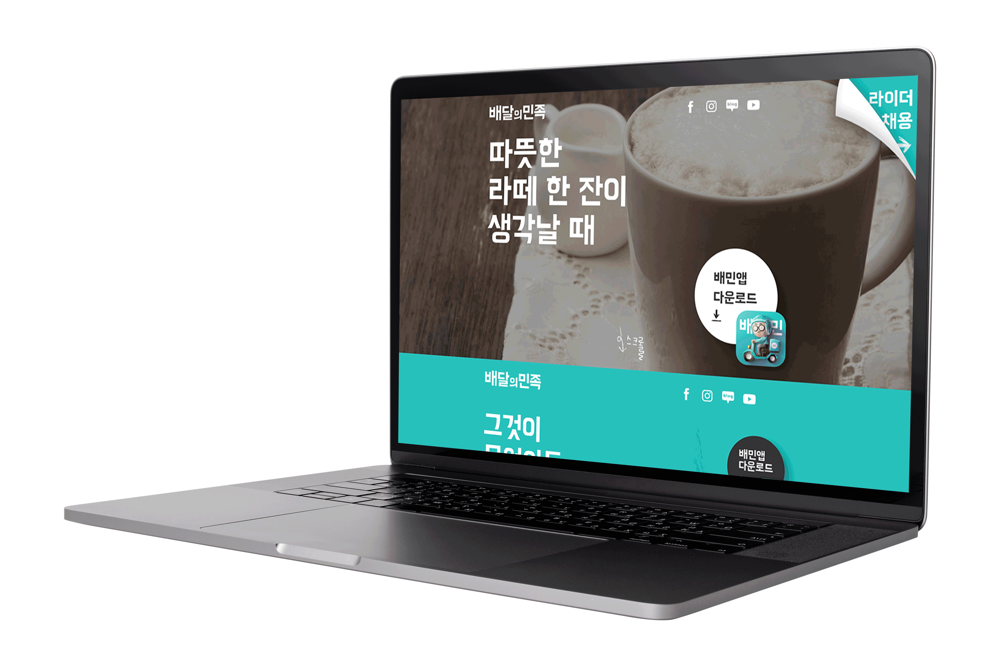
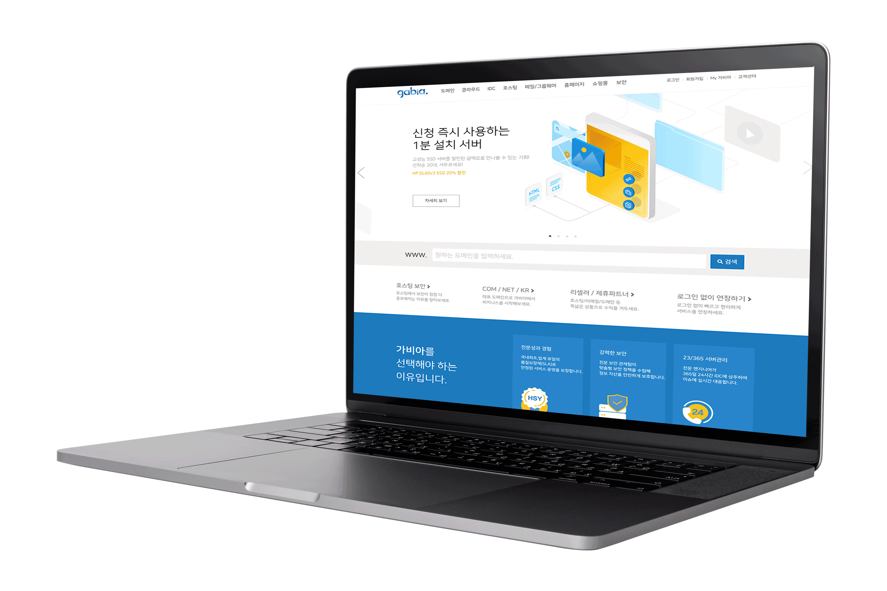
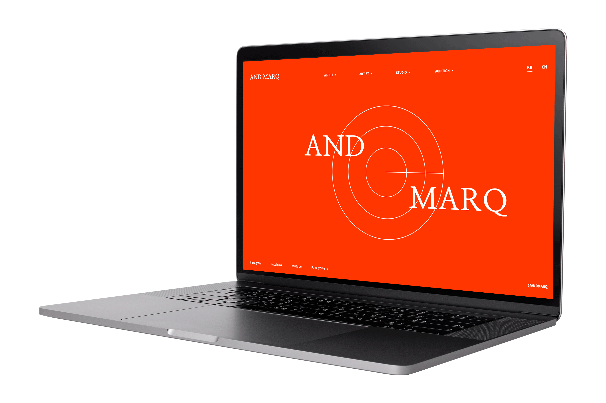
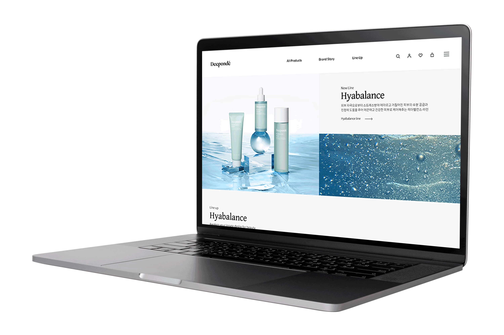

RESPONSIVE IS LIKE A WATER
반응형 웹 디자인이란 하나의 웹사이트에서 PC, 스마트폰, 태블릿 PC 등 접속하는 디스플레이의 종류에 따라 화면의 크기가 자동으로 변하도록 만든 웹페이지 접근 기법을 의미합니다.
-
Project 01
Sony Korea
소니 반응형 MAIN
view site
SLICK와 SWIPER 플러그인 사용하여 슬라이드를 구성하고 레이아웃 구성시 일부분 FLEX와 GRID를 활용하여 화면 구성하였습니다. 오른쪽 고정 네비게이션으로 패럴랙스 및 호버효과 구현하였습니다. -
Project 02
Megabox
메가박스 반응형 MAIN
view site
swiper.js 플러그인을 사용하여 슬라이드를 구성하고 이미지스프라이트 기법으로 전체적인 아이콘 및 이미지 구성하였습니다. select태그를 활용하여 옵션값을 지정 해보았고, 유튜브 api를 활용하여 클릭시 팝업 구현하였습니다. -
Project 03
Baemin Site
배달의 민족 반응형 MAIN
view site
css animation을 활용하여 스크롤시 캐릭터들을 이동시키거나, 스크롤 값에 따라 캐릭터들이 보이고 사라지는 효과를 넣어보았습니다. 패럴럭스 네비게이션을 추가 하여 생동감 있는 페이지를 구성하였습니다. -
Project 04
Gabia Site
가비아 반응형 MAIN
view site
swiper.js 로 상단 슬라이드를 구성하고, hover시 메뉴별 애니메이션 효과를 적용 하였습니다.input의 기본 속성을 변형, placeholder를 활용한 레이아웃 구성을 하였습니다. -
Project 05
Andmarq Redesign
앤드마크 리디자인 MAIN + 4 SUB
view site
4개의 서브페이지를 포함한 앤드마크 리디자인 홈페이지입니다.
skrolljs 플러그인과 jquery를 활용한 가로스크롤 반응형 디자인입니다.
햄버거 메뉴 및 커버 이미지에 css animation을 일부 적용시켰습니다. -
Project 06
Deponde Redisign
디폰데 리디자인 MAIN + 3SUB
view site
3개의 서브페이지를 포함한 디폰데 리디자인 홈페이지입니다.
swiper 플러그인의 패럴럭스 기능과 grid 시스템을 활용하여 작업하였습니다
index 페이지 상품 메뉴 호버시 transform 속성을 적용해 가볍게 원근감을 주었습니다.
- 
-
.png)
- 
- 
- 
- 